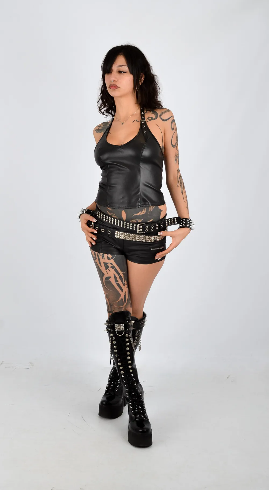

Sets
Sus sets filmados suman más de 1,6 millones de vistas en YouTube.
120bpm studio 157+ BPM

Bio
Martina Høbelar es DJ y productora argentina, nacida el 18 de enero de 2004, y co-founder de Sangre Club.
Su acercamiento al techno nace desde temprana edad, influenciada por sonidos con kicks marcados en distintos subgéneros. A los 17 años, descubrir las pistas de techno fue una revelación que la llevó, dos años después, a convertirse en DJ de este género y sus variantes.
Su sonido es una fusión potente de kicks marcados, percusión hipnótica y grooves constantes que invitan al movimiento sin pausa. Con una esencia arraigada en la cultura underground, su música navega entre el hard techno, el schranz, el neorave y el hard groove, con una identidad oscura pero vibrante.
- Base
- Buenos Aires, Argentina
- Sangre Club
- Co-founder
- Groove Selections
- Residente
- Géneros
- Hard techno, schranz, neorave y hard groove
Tracks firmados
| Track | Sello |
|---|---|
| Milay | Paradox Collective |
| Agorafobia | Arzaffel Records |
Fotos
Descargar fotos en altaRider
- Reproductores
- 3 × Pioneer CDJ-2000 Nexus 2 El tercero es opcional.
- Mixer
- Pioneer DJM-900 Nexus
- BPM en sus sets
- De 146 a 165
- Cambios
- Para cambios en el setup, consultar.
Booking
Fechas, prensa y colaboraciones.